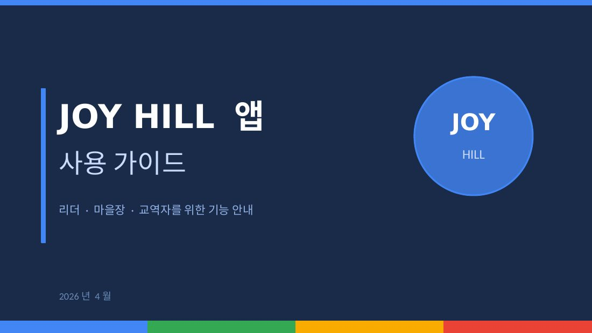
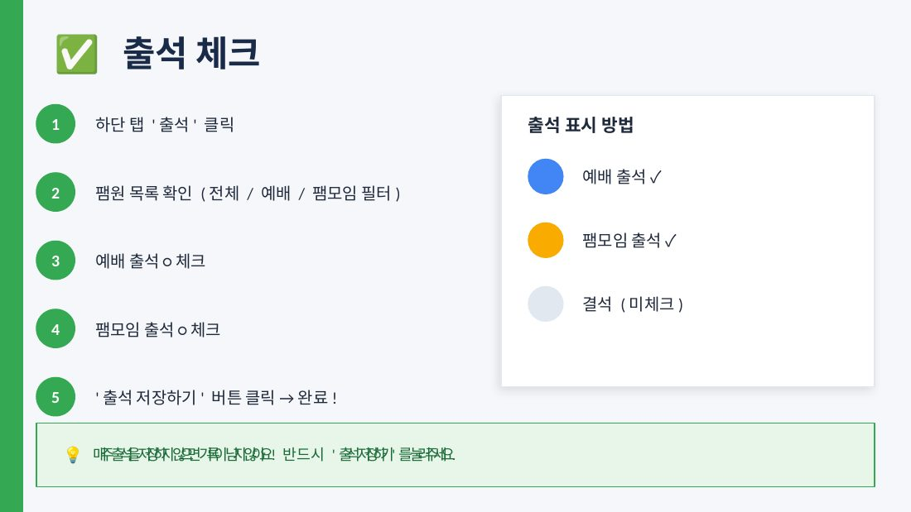
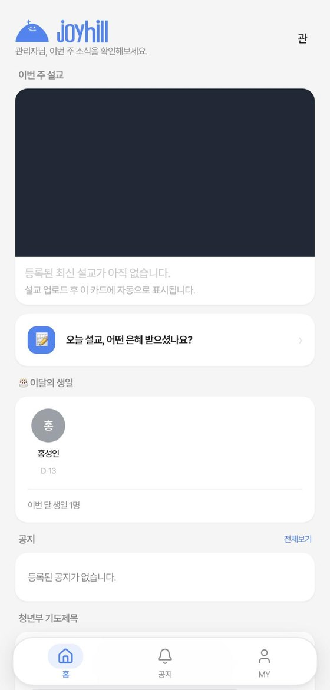
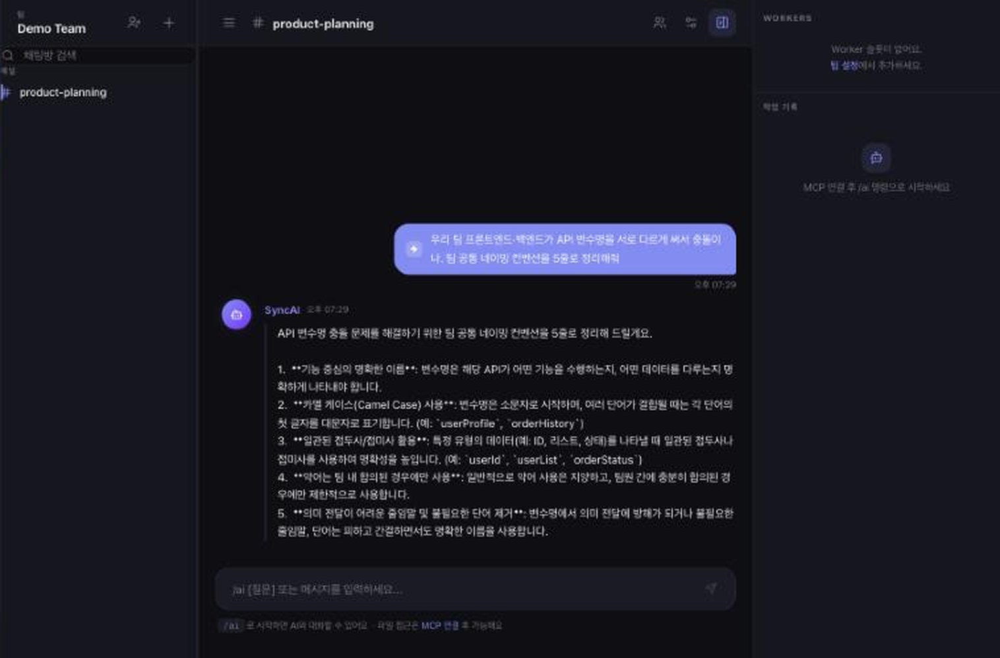
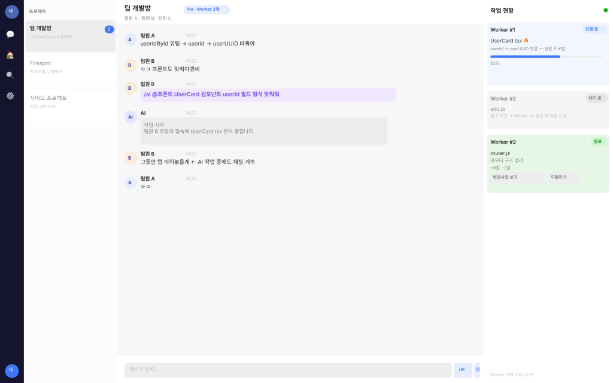
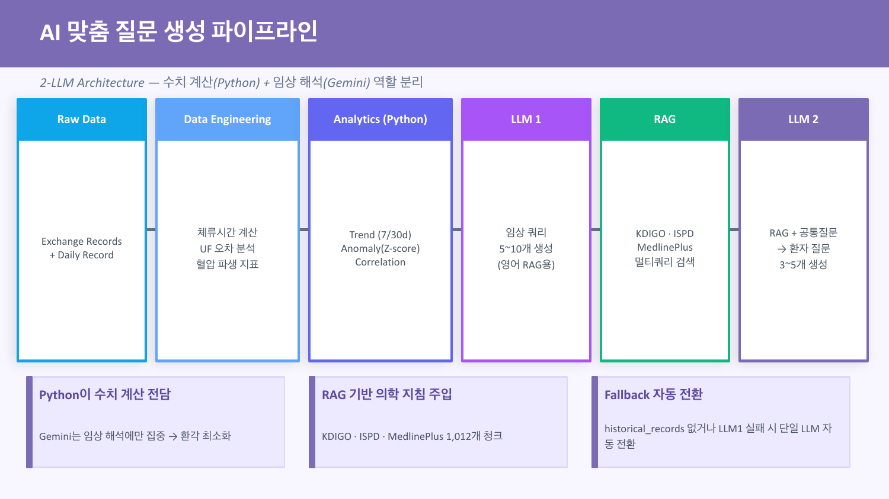
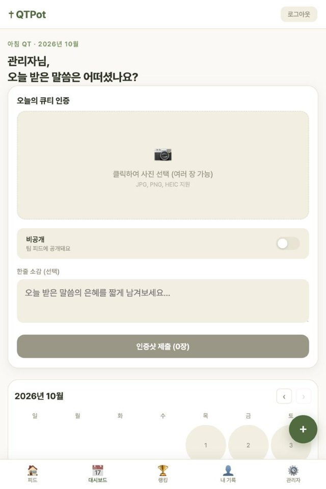
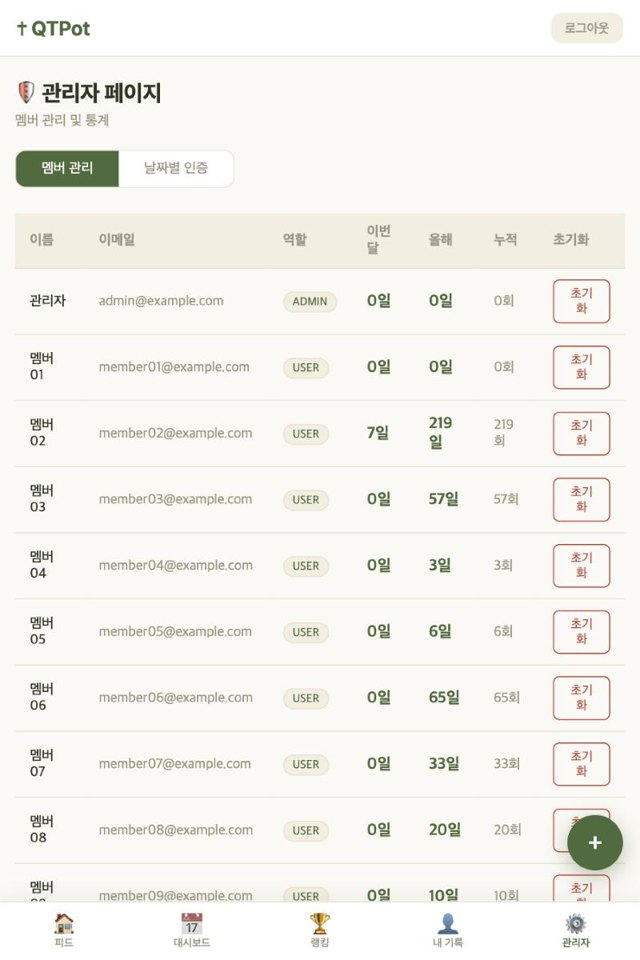
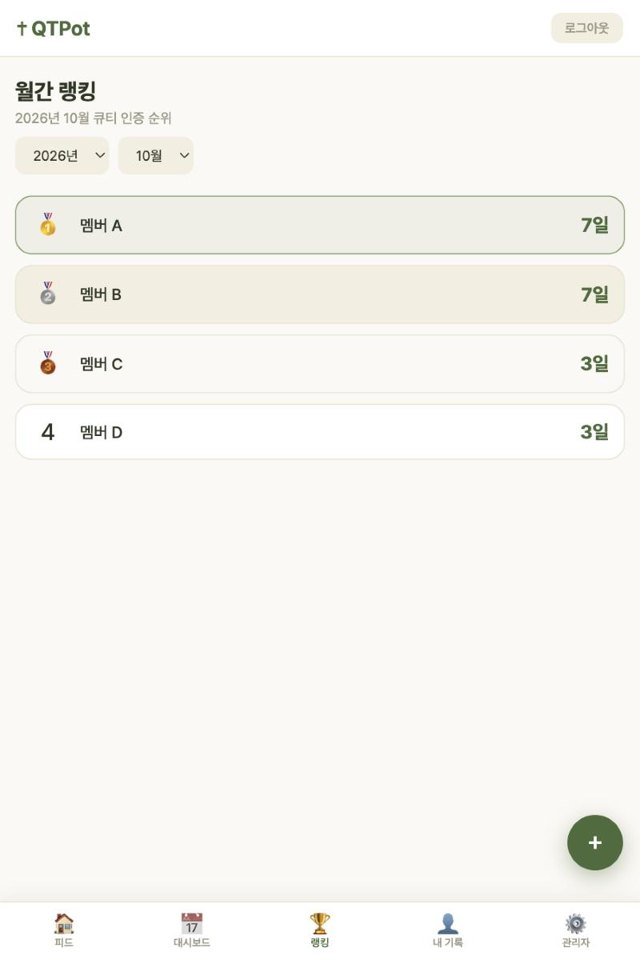

반복되는 일을 찾아 Claude Code로 직접 자동화 도구와 에이전트를 만들고, 배포해서 실제 사용자가 쓰게 하고, 운영하며 고쳐 왔습니다. 공고의 두 가지 업무, 반복 업무를 AI 에이전트·자동화로 만들고 운영하는 일과 팀별 데이터를 AI가 쓸 수 있게 정리하는 일에 맞춰 작업물을 정리했습니다.
김환희 · 서경대학교 소프트웨어학과 (2027.02 졸업예정) · SQLD · 바로 입사 가능
주요 업무와 자격요건별로 관련 작업을 정리했습니다. 해 보지 않은 것은 「배울 것」으로 표시했습니다.
| 공고 | 제 근거 | 상태 |
|---|---|---|
| 자격: Claude Code·Cursor 등으로 실제로 돌아가는 자동화·에이전트를 직접 만들어 본 분 | 아래 작업물 전부 Claude Code로 기획부터 배포까지 진행. JOYHILL·QTPot은 지금도 운영 중 | 매일 씀 |
| 반복 업무를 AI 에이전트로 | SyncAI: 계획 에이전트와 실행 에이전트 분리, Function Calling으로 도구 선택, 되돌리기 어려운 작업은 실행 전 사용자 승인 | 해 봄 |
| 자동화 워크플로 만들고 운영 | JOYHILL: DB → 구글시트 매일 자동 백업 + 수동 실행, 운영 중 시간대 오류 발견·수정 / CAPD: 외부 의료 자료 매주 자동 갱신 / QTPot: 정해진 시각 푸시 알림 | 운영 중 |
| 팀별 업무 데이터를 AI가 쓸 수 있게 정리 | CAPD: 가이드라인 1,012청크로 RAG 구성 / JOYHILL: 구글시트 기록을 DB로 옮기며 이중 집계 오류를 찾아 정리 | 해 봄 |
| 사내 AI 시스템의 기반 | 저장소마다 진행 상황·남은 일·규칙을 문서(CLAUDE.md)로 남겨 AI가 같은 맥락에서 이어서 작업하게 운영(JOYHILL, SyncAI) | 해 봄 |
| 재무·인증·영업·현장 업무 | 회사 업무 데이터를 직접 다뤄 본 적은 없습니다. 숫자가 중요한 일은 CAPD처럼 계산은 코드, 해석은 AI로 나누겠습니다. IoT 장비 쪽은 maru에서 기기·브로커·웹 연결을 해 봤습니다. | 배울 것 |
| n8n 같은 노코드 자동화 | 아직 써 보지 않았습니다. 같은 종류의 일(정해진 시각 실행, 시트 연동, 외부 API 호출)은 코드로 만들어 왔습니다. | 배울 것 |
Asia/Seoul을 명시해 고쳤습니다.








수업이 아니라 혼자 자료를 찾아 가며 ESP32 보드, MQTT 브로커, 웹 화면을 직접 연결해, 집 밖에서도 웹으로 방 안의 조명 2개를 켜고 끄고 밝기를 조절하게 만들었습니다. 세이프로보의 현장 장비처럼 기기와 서버가 데이터를 주고받는 구조를 직접 다뤄 본 경험입니다.
코드는 Claude Code와 함께 씁니다. 대신 아래 세 가지는 제가 합니다.
세이프로보는 산업안전 AIoT 솔루션으로 공공·산업 현장에서 성장하고 있습니다. 회사가 커질수록 재무·인증·영업·현장 업무에서 자료를 모으고 옮기고 확인하는 일이 늘어난다고 생각합니다. 어떤 일을 먼저 자동화할지는 현업의 이야기를 듣고 정하겠습니다.